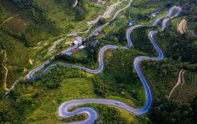
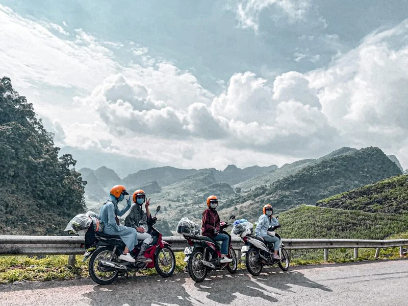
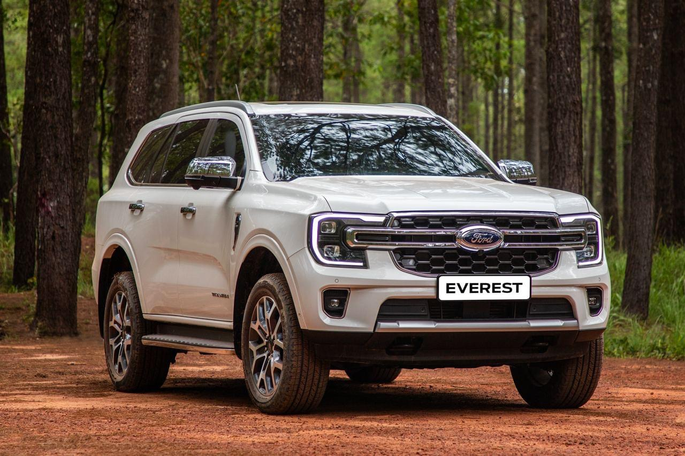

Top 5 Cung Đường Phượt Xe Máy Đẹp Nhất Việt Nam
Việt Nam có vô số cung đường tuyệt đẹp dành cho những ai đam mê phượt xe máy. Từ đèo Hải Vân hiểm trở đến cao nguyên đá Đồng Văn hùng vĩ, mỗi cung đường đều mang đến những trải nghiệm khó quên. Bài viết này sẽ giới thiệu 5 cung đường phượt xe máy bạn không thể bỏ lỡ...
Chuẩn bị xe kỹ lưỡng, kiểm tra lốp, phanh, xăng trước mỗi chuyến đi. Đừng quên các vật dụng bảo hộ như mũ bảo hiểm chất lượng, găng tay, giày. Hãy thuê một chiếc xe máy đáng tin cậy từ chúng tôi để có chuyến đi an toàn nhé!
Chọn Loại Xe Ô Tô Phù Hợp Cho Chuyến Du Lịch Gia Đình
Đi du lịch cùng gia đình đòi hỏi một chiếc xe thoải mái và an toàn. Xe 4 chỗ hay 7 chỗ? Số sàn hay số tự động? Bài viết này sẽ giúp bạn đưa ra lựa chọn tốt nhất dựa trên số lượng người và địa hình di chuyển...
Với gia đình nhỏ 3-4 người, xe 4 chỗ là lựa chọn tiết kiệm. Nếu có 5-7 người, xe 7 chỗ sẽ thoải mái hơn nhiều. Hãy cân nhắc địa hình để chọn xe số sàn hoặc số tự động.
Review Chi Tiết Honda Winner X - Lựa Chọn Cho Phượt Thủ
Honda Winner X là mẫu xe côn tay được nhiều phượt thủ ưa chuộng bởi động cơ mạnh mẽ và thiết kế thể thao. Bài viết này sẽ review chi tiết về ưu nhược điểm, cảm giác lái và tại sao nó lại phù hợp cho những chuyến đi dài...
Winner X có thiết kế nam tính, động cơ 150cc mạnh mẽ. Tuy nhiên, yên xe có thể hơi cứng cho những chuyến đi dài. Hãy thử thuê Winner X tại cửa hàng chúng tôi để trải nghiệm nhé!
Bí Quyết Bảo Dưỡng Xe Máy Trước Chuyến Đi Xa
Trước mỗi chuyến phượt dài, việc kiểm tra và bảo dưỡng xe máy là cực kỳ quan trọng để đảm bảo an toàn và tránh rủi ro. Bài viết này sẽ chia sẻ những bí quyết bảo dưỡng xe máy cần thiết...
Kiểm tra dầu nhớt, hệ thống phanh, lốp xe, đèn và còi. Đảm bảo ắc quy hoạt động tốt và mang theo bộ dụng cụ sửa chữa cơ bản. Một chiếc xe được bảo dưỡng tốt sẽ giúp bạn an tâm hơn trên mọi nẻo đường.
Khám Phá Hà Giang Bằng Xe Máy - Cẩm Nang Chi Tiết
Hà Giang là điểm đến mơ ước của mọi phượt thủ với những cung đường đèo hùng vĩ và cảnh quan thiên nhiên tuyệt đẹp. Cẩm nang này sẽ cung cấp thông tin chi tiết để bạn có chuyến đi Hà Giang trọn vẹn...
Lên kế hoạch lộ trình, tìm hiểu về thời tiết và chuẩn bị đầy đủ giấy tờ. Đừng quên thử các món ăn đặc sản địa phương và tận hưởng vẻ đẹp hoang sơ của cao nguyên đá.
Kinh Nghiệm Thuê Xe Tự Lái Lần Đầu: Những Điều Cần Lưu Ý
Thuê xe tự lái mang lại sự chủ động và tiện lợi cho chuyến đi của bạn. Tuy nhiên, nếu là lần đầu, bạn cần biết một số kinh nghiệm để tránh rắc rối và có trải nghiệm tốt nhất...
Đọc kỹ hợp đồng, kiểm tra tình trạng xe trước khi nhận, và hiểu rõ về bảo hiểm. Chọn đơn vị cho thuê uy tín để đảm bảo quyền lợi của bạn.
Du Lịch Biển Miền Trung Bằng Ô Tô Gia Đình
Miền Trung Việt Nam nổi tiếng với những bãi biển đẹp và di sản văn hóa phong phú. Một chuyến đi bằng ô tô gia đình sẽ giúp bạn khám phá trọn vẹn vẻ đẹp của dải đất này...
Khám phá Đà Nẵng, Hội An, Huế và Quy Nhơn. Lên kế hoạch chỗ ở, ăn uống và các điểm tham quan. Đảm bảo xe của bạn đủ chỗ cho hành lý và mọi thành viên trong gia đình.
Những Lưu Ý Khi Chọn Xe Ô Tô Cho Chuyến Đi Biển Cùng Gia Đình
Chuyến đi biển cùng gia đình sẽ thú vị hơn nếu bạn chọn được chiếc xe phù hợp. Gió biển, cát và quãng đường dài yêu cầu xe có khả năng vận hành êm ái, điều hòa mạnh và khoang chứa đồ rộng rãi....
Với gia đình 4-6 người, xe SUV hoặc CUV là lựa chọn hợp lý. Những dòng xe này thường có gầm cao, dễ dàng vượt qua những đoạn đường cát và đủ rộng để mang theo hành lý, đồ bơi, đồ ăn.
Xe Ô Tô 7 Chỗ – Giải Pháp Hoàn Hảo Cho Gia Đình Đông Người
Nếu gia đình bạn có từ 5 đến 7 thành viên, xe 7 chỗ là lựa chọn tối ưu cho các chuyến đi xa. Không gian rộng rãi, chỗ ngồi thoải mái giúp cả nhà thư giãn trong suốt hành trình dài...
Ngoài ra, nhiều mẫu xe 7 chỗ hiện nay có hàng ghế thứ 3 gập linh hoạt, phù hợp khi cần thêm không gian chứa hành lý. Hãy ưu tiên các xe có hệ thống an toàn đầy đủ và tiết kiệm nhiên liệu..
Chọn Xe Cho Chuyến Đi Về Quê – Ưu Tiên Gì Để Thoải Mái Và An Toàn?
Về quê vào dịp lễ Tết, bạn cần chiếc xe đủ mạnh, chở được nhiều người và có thể vượt qua những đoạn đường xấu. Những chiếc xe gầm cao như SUV là lựa chọn hàng đầu cho địa hình không bằng phẳng....
Gia đình 3-5 người có thể chọn xe 5 chỗ để tiết kiệm chi phí. Tuy nhiên, nếu bạn mang nhiều đồ hoặc có người lớn tuổi, xe 7 chỗ sẽ giúp hành trình thoải mái và an toàn hơn.
Xe Gia Đình Cho Cặp Đôi Có Con Nhỏ – Nên Chọn Gì Để An Tâm Hơn?
Có con nhỏ đồng nghĩa với việc bạn cần một chiếc xe tiện nghi và an toàn hơn. Ghế trẻ em, khoang hành lý cho xe đẩy, điều hòa 2 vùng là những yếu tố cần thiết...
Xe 5 chỗ dòng hatchback hoặc crossover cỡ nhỏ sẽ phù hợp nếu bạn chủ yếu đi trong nội thành. Với các chuyến đi xa, hãy cân nhắc những mẫu có thêm tính năng cảnh báo va chạm và camera lùi.
Chọn Xe Gia Đình Đi Phượt – Đảm Bảo Sức Mạnh Và Tiện Nghi
Đi phượt là những hành trình dài, nhiều thử thách. Xe dành cho gia đình đi phượt cần có động cơ mạnh mẽ, gầm cao và hệ thống giảm xóc tốt để xử lý các cung đường gồ ghề...
SUV 5+2 hoặc xe bán tải cabin kép sẽ là lựa chọn hoàn hảo. Không chỉ đủ chỗ cho người ngồi, bạn còn dễ dàng chở theo lều trại, đồ ăn uống hay các vật dụng dã ngoại cần thiết.
Xe Gia Đình Tiết Kiệm Nhiên Liệu – Nên Chọn Loại Nào?
Nếu bạn thường xuyên di chuyển xa với gia đình, chi phí xăng xe sẽ là điều đáng cân nhắc. Những dòng xe hybrid hoặc sử dụng động cơ dung tích nhỏ sẽ giúp tiết kiệm đáng kể...
Xe 5 chỗ vẫn là lựa chọn hàng đầu nếu gia đình bạn không quá đông người. Hãy ưu tiên các mẫu xe có công nghệ hỗ trợ lái và màn hình giải trí để mọi người thoải mái hơn khi di chuyển.
Ưu – Nhược Điểm Của Xe Số Sàn Và Số Tự Động Khi Đi Du Lịch Gia Đình
Xe số tự động dễ lái, đặc biệt trên những hành trình dài. Nếu bạn ít kinh nghiệm hoặc thường xuyên lái trong thành phố đông đúc, số tự động là lựa chọn nên cân nhắc...
Ngược lại, xe số sàn giúp tiết kiệm nhiên liệu và phù hợp với những ai thích cảm giác lái chủ động. Tuy nhiên, nếu đi cùng gia đình có trẻ nhỏ, bạn nên ưu tiên sự thoải mái hơn là tiết kiệm.
Chọn Xe Gia Đình Theo Mùa – Mùa Hè Nên Chọn Xe Gì, Mùa Đông Thì Sao?
MMỗi mùa có yêu cầu riêng cho xe gia đình. Mùa hè, điều hòa mát, kính chống tia UV và rèm cửa là yếu tố quan trọng giúp cả nhà dễ chịu khi đi du lịch xa...
Mùa đông cần chú ý tới hệ thống sưởi, gạt mưa tự động và chế độ sấy kính. Những xe có hệ dẫn động 4 bánh sẽ hỗ trợ tốt hơn khi di chuyển trong điều kiện thời tiết lạnh hoặc trơn trượt.
Chọn Xe Máy Đi Phượt Cho Cặp Đôi – Nên Lưu Ý Gì?
Khi đi phượt cùng người yêu, bạn cần xe máy khỏe, yên sau êm và có thể chở được đồ đạc gọn gàng. Đặc biệt, xe cần có độ bám đường tốt để đi được cả đường đèo, đường đất.
Hãy chọn xe tiết kiệm xăng để hành trình thêm thoải mái. Xe côn tay mang lại cảm giác lái thể thao, còn tay ga hiện đại thì dễ điều khiển hơn.
Gầm Cao Hay Gầm Thấp – Loại Xe Nào Đi Du Lịch Tốt Hơn?
Xe gầm cao như SUV giúp bạn vượt địa hình xấu, lội nước và leo đèo an toàn hơn. Đây là lựa chọn lý tưởng cho các chuyến đi vùng núi hoặc ven biển.
Ngược lại, xe gầm thấp lái ổn định hơn khi đi trong phố, ít hao nhiên liệu và dễ dàng đỗ xe ở nơi chật hẹp.
Người Mới Lái Ô Tô – Kinh Nghiệm Du Lịch Đầu Tiên Nên Biết
Nếu bạn mới biết lái, hãy chọn tuyến đường dễ đi và tránh lái xe đêm. Lên kế hoạch nghỉ ngơi sau mỗi 2–3 tiếng để giảm căng thẳng và giữ tỉnh táo.
Xe cho người mới nên dễ điều khiển, có camera lùi, cảnh báo va chạm và hỗ trợ phanh an toàn.
Đi Du Lịch Đèo Dốc – Xe Nào Là Lựa Chọn An Toàn Nhất?
Khi chinh phục các cung đèo Tây Bắc, xe cần có động cơ mạnh, phanh tốt và ổn định thân xe khi xuống dốc. Gầm xe cao cũng là lợi thế.
Bạn nên chọn xe có chế độ kiểm soát đổ đèo và hệ dẫn động hai cầu nếu đi vào mùa mưa.
Xe Máy Tốt Nhất Cho Hành Trình Đà Lạt, Tây Bắc
Phượt bằng xe máy là trải nghiệm tuyệt vời, nhưng cần một chiếc xe thật bền bỉ. Địa hình đồi núi khiến động cơ yếu khó leo dốc và dễ hư hỏng.
Xe nên có khả năng chịu tải tốt, phanh đĩa trước sau và tiêu hao nhiên liệu thấp để giảm chi phí.
Mẹo Lái Xe Tiết Kiệm Nhiên Liệu Khi Du Lịch
Để tiết kiệm xăng khi đi xa, bạn nên duy trì tốc độ ổn định, hạn chế tăng giảm ga liên tục và giữ lốp luôn đúng áp suất.
Không bật điều hòa quá mạnh, không chở quá nặng và tắt máy khi dừng lâu cũng giúp giảm tiêu hao đáng kể.
Du Lịch Bằng Xe Máy – Chọn Tay Ga Hay Xe Số?
Xe số có khả năng leo dốc khỏe, ít tốn xăng và dễ sửa chữa. Xe tay ga tiện lợi hơn, có cốp rộng và dễ điều khiển trong đô thị.
Hành trình dài nên chọn xe phù hợp với thể lực và thói quen lái xe của bạn.
Du Lịch Đà Lạt – Xe Máy Hay Ô Tô Là Lựa Chọn Tốt?
Nếu bạn thích tự do khám phá từng con dốc nhỏ, xe máy là lựa chọn lý tưởng. Nhưng nếu đi gia đình hoặc ngại thời tiết lạnh, ô tô thoải mái hơn nhiều.

Đà Lạt có nhiều dốc cao, hãy chọn phương tiện có đủ sức leo và phanh tốt để đảm bảo an toàn.
Du Lịch Cuối Tuần – Xe Nào Phù Hợp Nhất Cho Gia Đình Trẻ?
Chuyến đi ngắn nên ưu tiên xe dễ lái, tiết kiệm xăng, đủ không gian cho 4 người và hành lý gọn nhẹ. Xe càng nhỏ gọn càng dễ đỗ và xoay xở.

Đừng quên tiện nghi như điều hòa mát nhanh và loa tốt để giải trí trên đường.
Những Lỗi Cần Tránh Khi Du Lịch Bằng Ô Tô
Không kiểm tra lốp, thiếu nước làm mát, quên bảo dưỡng trước chuyến đi là các lỗi phổ biến.

Hãy luôn mang theo giấy tờ xe, bản đồ offline và bộ kích điện dự phòng để xử lý các tình huống khẩn cấp.
Đồ Cần Mang Theo Khi Phượt Bằng Xe Máy
Ngoài hành lý cá nhân, bạn nên mang áo mưa, bộ vá xe, dây ràng đồ, nước uống và áo phản quang nếu đi đêm.

Một chiếc baga chắc chắn hoặc cốp rộng sẽ giúp bạn chứa đủ đồ mà vẫn thoải mái di chuyển.